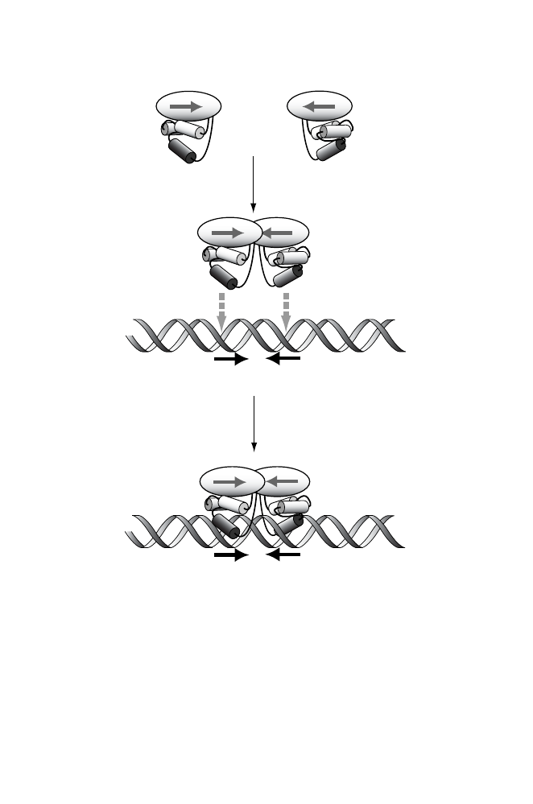

1
2
3
1
1
2
3
+
1
Dimerization
Binding
Fig. 9.2.
How site structure reflects the structure of a binding protein. The binding
protein (Cro in this case) binds head-to-head as a dimer. The individual monomer
components interact with the DNA through the major groove (bottom panel). In-
teraction of the dimer with successive major groove regions on the same face of
the helix implies that the centers of the two interaction regions will be spaced 10
to 11 bp apart—the pitch of B-form DNA. The equivalence of interactions between
helices 3 of both monomers and DNA imposes inverted symmetry within the DNA
sequence to which Cro binds.